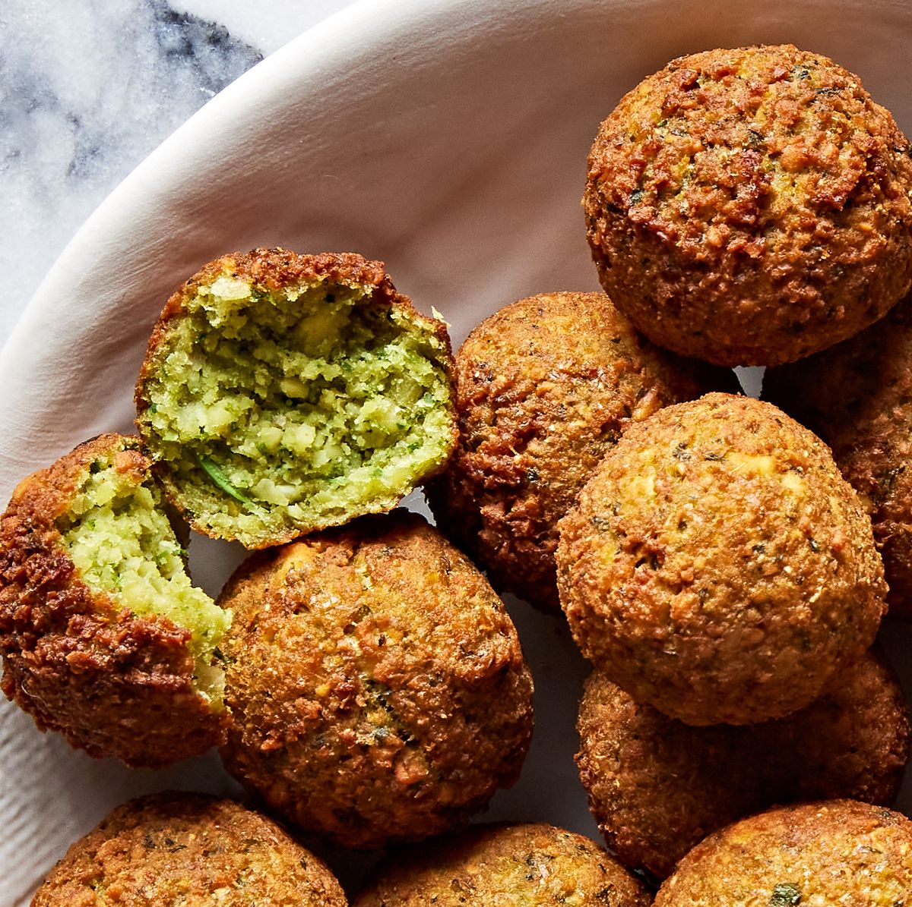

Falafel
An easy to make dish which can be eaten for breakfast or whenever you want
Falafel are deep-fried balls or patties made from chickpeas or fava beans, sometimes both, plus fresh herbs and spices. Falafel is a popular Middle Eastern street food
It’s served in pita sandwiches with pickles, hot sauce, tahini and vegetables such as tomatoes, cucumbers and lettuce; as part of a mezze spread with other small plates such as hummus, tabbouleh and grape leaves; or paired with salad or as a side with hummus.

Ingredients
- Dried chickpeas
- Fresh herbs(parsley, cilantro)
- Garlic
- Salt and Pepper
- Spices(cumin, coriander, cayenne Pepper)
- Baking Powder
Recipe Instructions
- Soak chickpeas for 24 hours. Cover them in plenty of water and add baking soda to help soften them as they soak. The chickpeas will at least double in size as they soak. Drain very well.
- Add chickpeas, fresh herbs (parsley, cilantro, and dill), garlic, onion, and spices to food processor and pulse a little bit at a time until the mixture is finely ground. You’ll know it’s ready when the texture is more like coarse meal.
- Transfer the falafel mixture to a bowl, cover and refrigerate for at least 1 hour or overnight. The chilled mixture will hold together better, making it easier to form the falafel patties.
- Form patties or balls. Once the falafel mixture has been plenty chilled, stir in baking powder and toasted sesame seeds, then scoop golf ball-sized balls and form into balls or patties (if you go the patties route, do not flatten them too much, you want them to still be nice and fluffy when they're cooked.)
- Carefully drop the falafel in the oil, using a slotted spoon, and fry for 3-5 minutes until medium brown on the outside. Avoid over-crowding the falafel; fry them in batches if necessary.
- Once cooked, falafel should be crispy and medium brown on the outside, fluffy and light green on the inside.